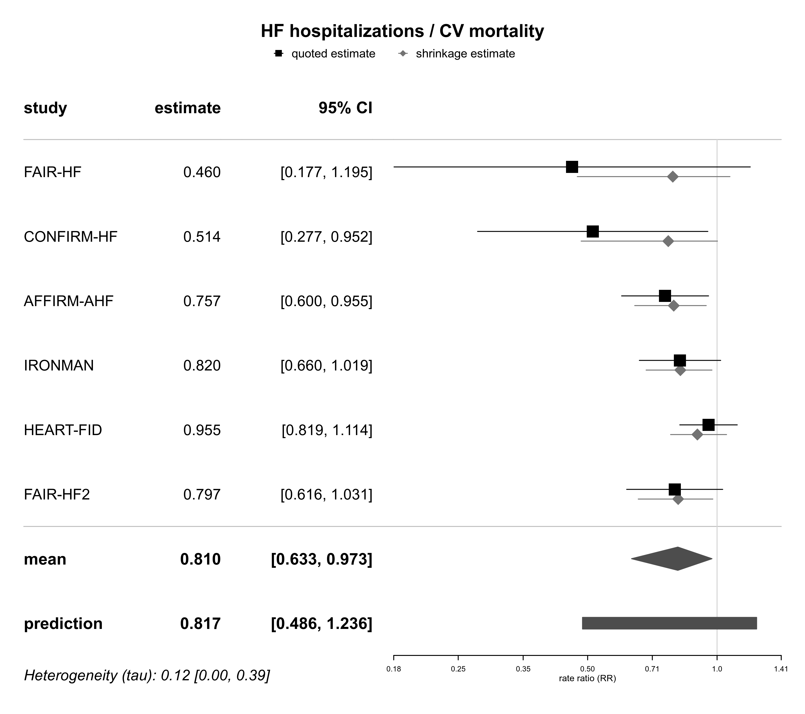
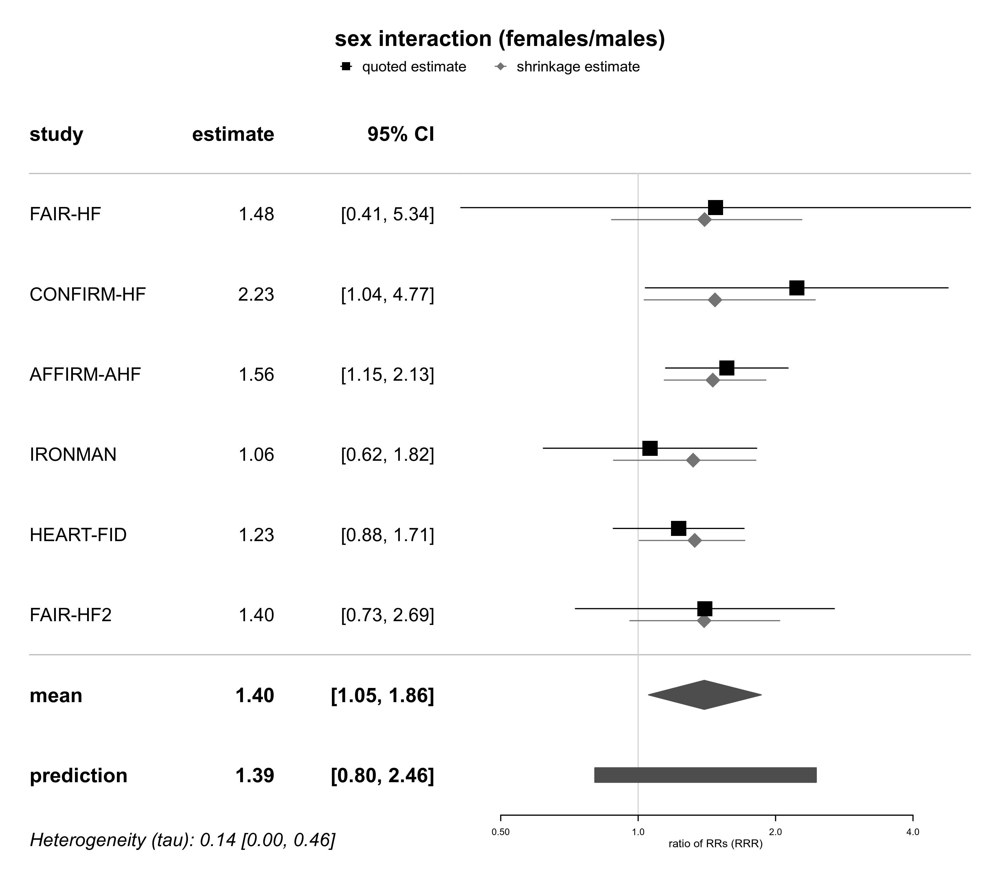
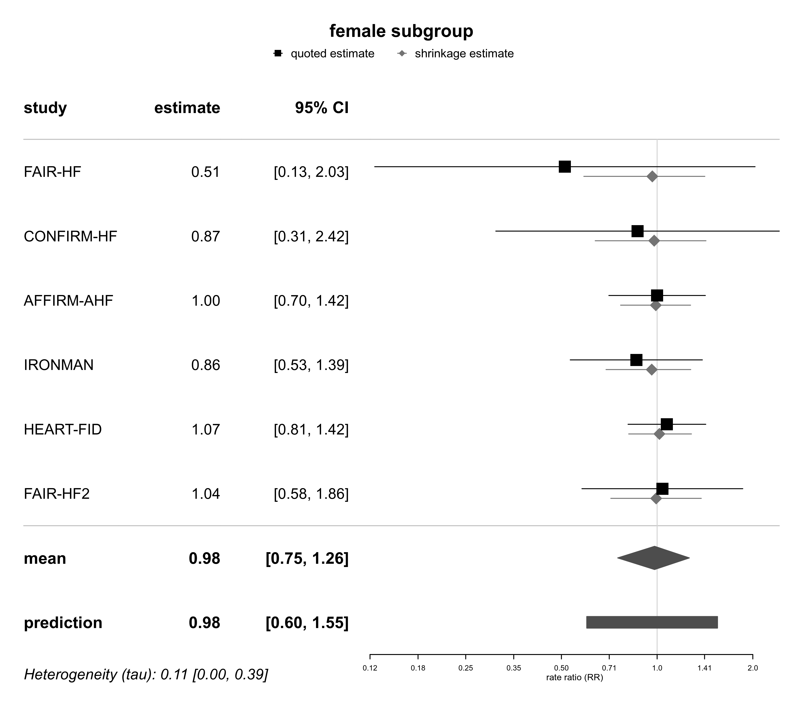
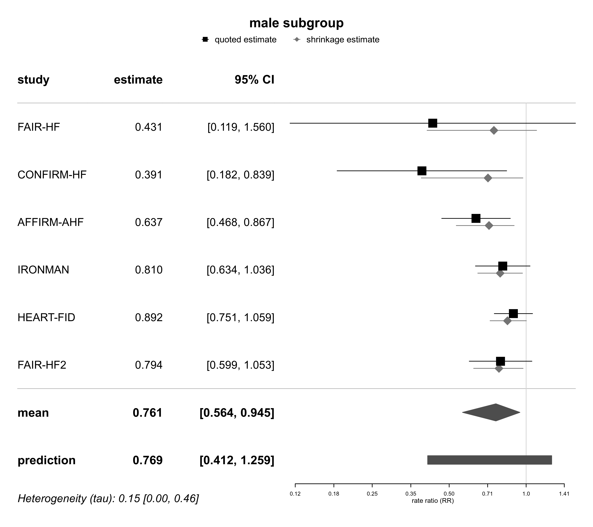

dat.anker2025.RdTreatment effects, overall and in male/female patient subgroups, as well as treatment-by-subgroup interaction effects in six randomized, placebo-controlled trials.
dat.anker2025The data frame contains the following columns:
| study | character | study identifier |
| year | integer | study year |
| intv.n | integer | number of patients in the intervention group |
| placebo.n | integer | number of patients in the placebo group |
| iv.iron | factor | the intravenous (IV) iron formulation investigated |
| size | factor | study size (“small” or “large”, based on total number of patients) |
| followup | numeric | followup duration (months) |
| baseline.age | numeric | mean age at baseline (years) |
| baseline.lvef | numeric | mean left ventricular ejection fraction (LVEF) at baseline (%) |
| baseline.hgb | numeric | mean haemoglobin at baseline (g/dl) |
| baseline.ft | numeric | mean ferritin at baseline (\(\mu\)g/l) |
| baseline.tsat | numeric | mean transferritin saturation (TSAT) at baseline (%) |
| total.n | integer | total number of patients |
| total.logrr | numeric | overall effect (log-RR) |
| total.se | numeric | standard error of overall effect |
| female.n | integer | number of female patients |
| female.logrr | numeric | effect (log-RR) in females |
| female.se | numeric | standard error of effect in females |
| male.n | integer | number of male patients |
| male.logrr | numeric | effect (log-RR) in males |
| male.se | numeric | standard error of effect in males |
| sex.logrrr | numeric | treatment-by-subgroup interaction (log-RRR) |
| sex.se | numeric | standard error of treatment-by-subgroup interaction |
Anker et al. (2025) analyzed the effects of intravenous (IV) iron therapy observed in six randomized, placebo-controlled trials. The primary endpoint was a composite of (recurrent) heart failure (HF) hospitalizations and cardiovascular (CV) death, and treatment effects were quantified in terms of risk ratios (RRs). Individual participant data were available for five trials, and analyses were harmonized to match the analysis of the sixth trial (the Ironman study). Meta-analyses were then performed based on logarithmic RRs (log-RRs).
Besides investigation of the overall effect, it was of interest to what extent male and female patients benefited, and whether effects differed between both patient subgroups. The data set includes effect estimates within each study's male and female subgroups (in terms of log-RRs), as well as estimates of the difference between the subgroups (in terms of logarithmic ratios of RRs (log-RRRs). Technically, the RRRs then constitute treatment-by-subgroup interaction effects.
Anker, S. D., Karakas, M., Mentz, R. J., Ponikowski, P., Butler, J., Khan, M. S., Talha, K. M., Kalra, P. R., Hernandez, A. F., Mulder, H., Rockhold, F. W., Placzek, M., Röver, C., Cleland, J. G. F., & Friede, T. (2025). Systematic review and meta-analysis of intravenous iron therapy for patients with heart failure and iron deficiency. Nature Medicine, 31(8), 2640-2646. https://doi.org/10.1038/s41591-025-03671-1
medicine, cardiology, incidence rates
# show data
dat.anker2025
#> study year intv.n placebo.n iv.iron size followup baseline.age baseline.lvef
#> 1 FAIR-HF 2009 304 155 carboxymaltose small 6 67 33
#> 2 CONFIRM-HF 2015 150 151 carboxymaltose small 12 70 37
#> 3 AFFIRM-AHF 2020 558 550 carboxymaltose large 12 71 33
#> 4 IRONMAN 2022 569 568 derisomaltose large 32 74 35
#> 5 HEART-FID 2023 1533 1532 carboxymaltose large 25 69 31
#> 6 FAIR-HF2 2025 558 547 carboxymaltose large 17 70 34
#> baseline.hgb baseline.ft baseline.tsat total.n total.logrr total.se female.n female.logrr female.se
#> 1 11.9 56 17 459 -0.7761 0.4867 244 -0.6680 0.7028
#> 2 12.4 57 19 301 -0.6660 0.3146 141 -0.1418 0.5238
#> 3 12.2 86 15 1108 -0.2784 0.1188 494 -0.0001 0.1783
#> 4 12.1 50 15 1137 -0.1985 0.1111 300 -0.1508 0.2441
#> 5 12.6 57 24 3065 -0.0458 0.0785 1037 0.0708 0.1436
#> 6 12.5 73 19 1105 -0.2270 0.1312 368 0.0379 0.2972
#> male.n male.logrr male.se sex.logrrr sex.se
#> 1 215 -0.8409 0.6558 0.3908 0.6558
#> 2 160 -0.9390 0.3895 0.7999 0.3895
#> 3 614 -0.4513 0.1576 0.4473 0.1576
#> 4 837 -0.2107 0.1254 0.0599 0.2745
#> 5 2028 -0.1145 0.0879 0.2044 0.1683
#> 6 737 -0.2302 0.1439 0.3365 0.3332
library(bayesmeta)
#> Loading required package: forestplot
#> Loading required package: grid
#> Loading required package: checkmate
#> Loading required package: abind
#> Loading required package: mvtnorm
#>
#> Attaching package: ‘bayesmeta’
#> The following object is masked from ‘package:stats’:
#>
#> convolve
# specify heterogeneity (tau) prior density (half-normal(0.5))
HN05 <- function(t){dhalfnormal(t, scale=0.5)}
#######################################
# reproduce primary analysis (Fig.2)
es.primary <- escalc(measure="IRR", yi=total.logrr, sei=total.se,
ni=total.n, slab=study, data=dat.anker2025)
bma01 <- bayesmeta(es.primary, tau.prior=HN05)
forestplot(bma01, expo=TRUE, xlog=TRUE,
xlab="rate ratio (RR)", title="HF hospitalizations / CV mortality")

######################################
# reproduce sex interaction analysis
# (Tab.2, Supplementary Fig.4)
es.sex <- escalc(measure="GEN", yi=sex.logrrr, sei=sex.se,
ni=total.n, slab=study, data=dat.anker2025)
bma02 <- bayesmeta(es.sex, tau.prior=HN05)
forestplot(bma02, expo=TRUE, xlog=TRUE,
xlab="ratio of RRs (RRR)", title="sex interaction (females/males)")

###########################################
# reproduce male/female subgroup analyses
# (Tab.2, Supplementary Fig.12)
es.female <- escalc(measure="IRR", yi=female.logrr, sei=female.se,
ni=female.n, slab=study, data=dat.anker2025)
es.male <- escalc(measure="IRR", yi=male.logrr, sei=male.se,
ni=male.n, slab=study, data=dat.anker2025)
bma03a <- bayesmeta(es.female, tau.prior=HN05)
bma03b <- bayesmeta(es.male, tau.prior=HN05)
forestplot(bma03a, expo=TRUE, xlog=TRUE,
xlab="rate ratio (RR)", title="female subgroup")

forestplot(bma03b, expo=TRUE, xlog=TRUE,
xlab="rate ratio (RR)", title="male subgroup")
